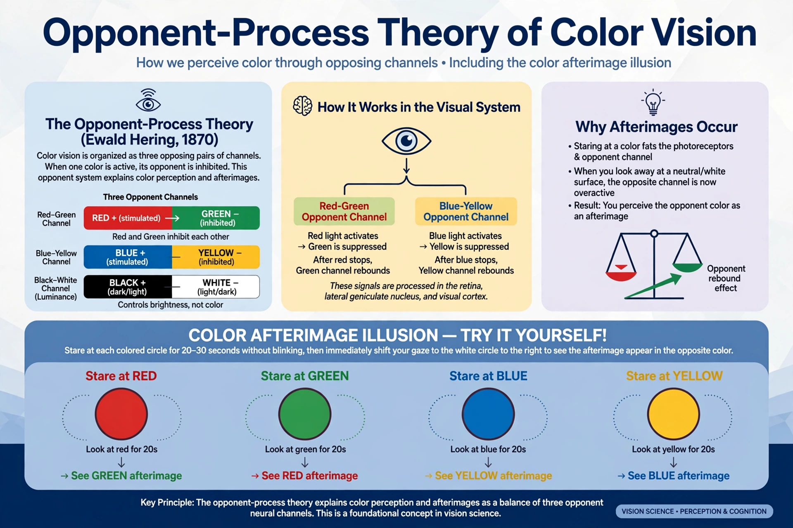

Opponent-process theory refers to two related theories in psychology. In vision science, Ewald Hering's opponent process theory of colour vision (1878) holds that the visual system interprets colour through antagonistic pairs — red vs. green, blue vs. yellow, black vs. white. In motivational psychology, Richard Solomon and John Corbit's opponent-process theory of emotion (1974) proposes that every emotional reaction (the "a-process") automatically triggers an opposing reaction (the "b-process"), with major implications for addiction, thrill-seeking and habituation.
| Opponent-process theory | |
|---|---|
 Opponent channels explain colour afterimages | |
| Field | Colour vision; psychology of emotion and motivation |
| Proponents | Ewald Hering (vision); Richard Solomon & John Corbit (emotion, 1974) |
Hering noted phenomena trichromatic theory could not explain, such as reddish-green being impossible to perceive while yellowish-red (orange) is natural, and complementary afterimages. Modern physiology reconciles the two theories as stages: three cone types feed opponent ganglion-cell channels in the retina and lateral geniculate nucleus. The opponent framework underlies colour spaces such as CIELAB.
Solomon's theory states that the primary affective response (a-process) is followed by a sluggish, opposite-valence opponent process (b-process). With repetition, the a-process stays roughly constant while the b-process strengthens and arrives sooner. Applied to drug use, this predicts tolerance and withdrawal: the euphoric high weakens while the dysphoric after-reaction intensifies, so use becomes driven by avoiding withdrawal — a framework developed further in the allostasis model of addiction. The theory also explains phenomena such as skydivers' progression from terror-then-relief to exhilaration, and the emotional dynamics of attachment and grief.
See also: Color vision, Allostasis